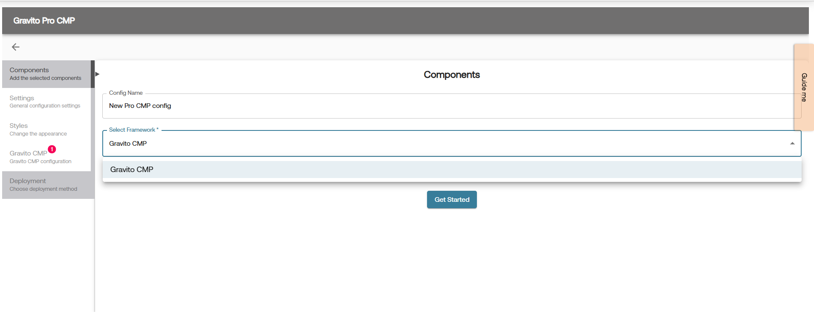
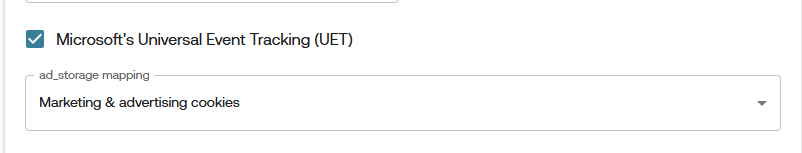

Microsoft Consent Mode (UET)
Enabling Microsoft Consent Mode in Pro Gravito CMP
Pro Gravito CMP supports two ways to enable Microsoft's Universal Consent Mode:
1. Using Configurator
- Login to the Gravito Admin Portal.
- Click on the CMP tab.
- Select the Gravito Pro CMP Configurator from the option.
- On the CMP Config listing page, click the New Configuration button to create a new CMP config.
-
Give config an appropriate name and choose Gravito CMP as Framework. After that, click Get Started to proceed. 
-
Now navigate to Gravito CMP tab and Consent Categories sub-tab for UET related setup.
- You can enable UET by checking the checkbox labeled Microsoft's Universal Event Tracking (UET).
- After enabling UET, an additional field will appear for configuration. 
Consent Mapping:
You’ll now see dropdowns to map category for : ad_storage
Select the relevant consent category from the dropdown list.
Note: This mapping is for the ad_storage signal only is common across both GCMv2 & UET.
Once mapping is complete, click Save Progress at the top-right. Now you have successfully enabled Microsoft UET Consent Mode in your CMP configuration.
You may continue filling out the other CMP configuration steps, or jump directly to the Deployment tab.
2. Without Configurator
-
Enable UET Mode:
Add theuseUETflag under thegravitoCMP.coresection of your configuration and set its value totrue.gravitoCMP: { "core": { "useUET": true, // ... other configurations } // ... other sections } -
Add
adsConsentIdYou must also define the
adsConsentIdproperty in your configuration. This is required to map consent values for Microsoft UET. There are two cases:-
If Google Consent Mode is already configured:
The
adsConsentIdproperty will already be available in your config. -
If not configured:
Add the
adsConsentIdproperty under thegravitoCMP.coresection of your config manually.
-
-
Define
adsConsentIdBased on CMP TypeThe
adsConsentIdshould be a single ID referring to the custom consent item that you have defined in the config. It is not an array of TCF purpose IDs in this case.Example:
gravitoCMP: { "core": { "useUET": true, "adsConsentId": "{{YOUR_CONSENT_ITEM_ID}}" // ... other configurations }, }This means the consent value of the item with ID
"{{YOUR_CONSENT_ITEM_ID}}"will be used for Microsoft UET. -
How Gravito CMP Handles UET Consent
Once the above configuration is complete:
- Microsoft UET mode is considered enabled.
- Gravito CMP adds the corresponding ads consent value (
deniedorgranted) to the globaluetqwindow object. - By default, the value is
denied. - After consent is obtained, the CMP updates the value based on the mapping defined in
adsConsentId.
Microsoft reads this value from the
uetqobject to determine whether tracking is allowed.Gravito CMP's follow the approach mentioned Here